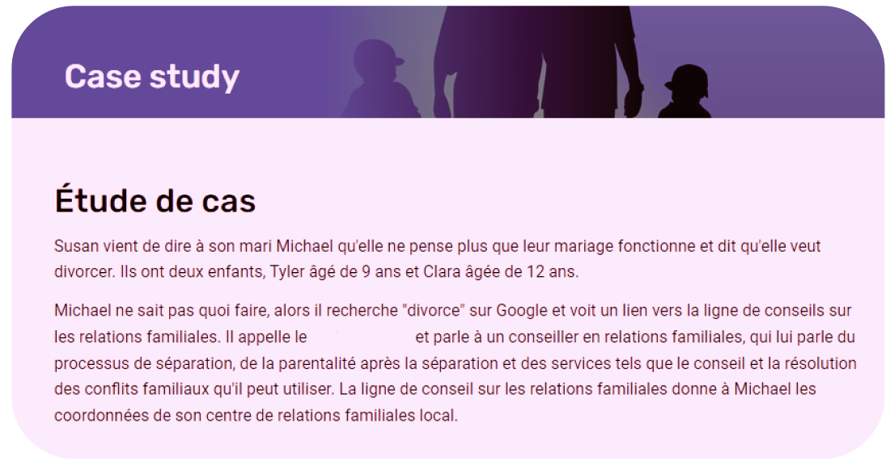

Family shell offre un service d'assistance téléphoniqueconfidentiel et
gratuit pour les en Tunisie .Pour un soutien
émotionnel, des informations, desconseils et des orientations sur tout
aspect de laparentalité et de la vie de famille.
Si vous voulez parler..
On est ici pour vous
+216 71 155 445
Horaires d'ouverture de la ligne d'assistance :
Nous répondons actuellement à 64 % de tous les appelants qui sonnent. Si vous pas de réponse la première fois, veuillez réessayer.
Qui peut appeler la Ligne Conseil ? :
N'importe qui peut appeler la ligne d'information sur les relations familiales. Cela inclut les parents, les grands-parents, les enfants, les jeunes, les autres membres de la famille ou les amis. D'autres personnes susceptibles d'offrir des conseils ou un soutien aux familles peuvent également appeler la ligne d'assistance téléphonique pour obtenir des informations.
